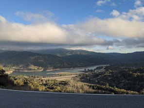
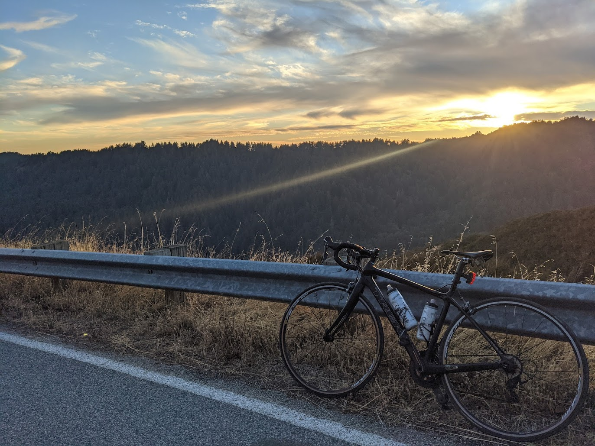
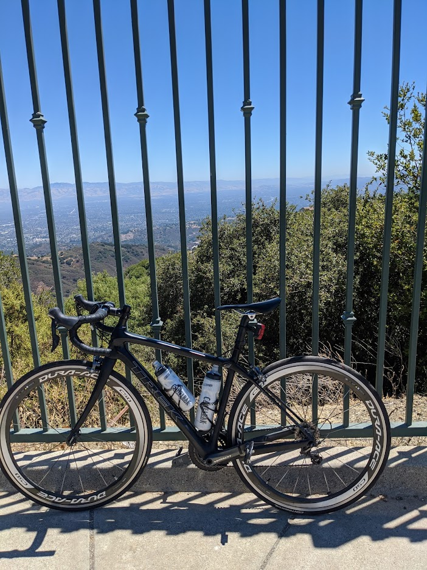

Kevin's Favorite Bike Climbs

Kevin's favorite climb with gorgeous views of lexington reservoir, hwy 17, and the bay area. A refreshingly steep gradient with extremely low traffic due to it being a no-thru road.

A challenging climb that pushes the legs (and grit) of ambitious cyclists! Great views of the saratoga mountains with relatively low traffic!

An iconic climb attracting many cylists from throughout the bay area. The varied scenery throughout this climb and
4. Soda Springs
Back to Kevin Kim's home page.